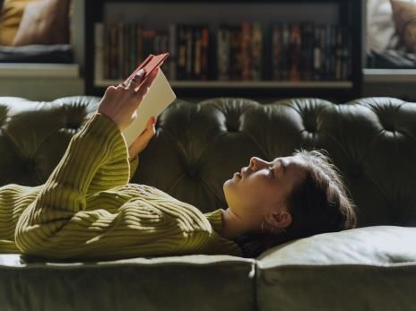
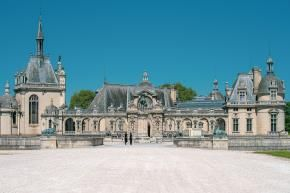

Aptis Speaking
Part 1: In this part, I am going to ask you three short questions about yourself and your interests. You will have 30 seconds to reply to each question.
1. What is your favorite animal?
My favourite animal is the dog. I have a small dog at home. It is friendly and loyal. I like playing with it every day. It makes me feel happy and relaxed.
2. Describe where you live.
I live in a small house in the city. It is not very big, but it is comfortable. There are many trees near my house. I like it because it is quiet and safe.
3. What is the weather like today?
Today the weather is sunny and warm. The sky is blue and clear. I feel good because sunny days make me want to go outside.
Part 2: In this part, I'm going to ask you to describe a picture. Then I will ask you two questions about it. You will have 45 seconds for each response.
| 1. Describe the picture |
2. How important is it to keep things clean?
I think it is very important to keep things clean. A clean place helps us stay healthy and feel comfortable. It also makes a good impression on visitors.
3. How do you keep your house clean?
I clean my house every weekend. I sweep the floor, wash the dishes and tidy up my room. Sometimes my family helps me too. It does not take much time.
Part 3: In this part, I'm going to ask you to compare two pictures, and I will then ask you two questions about them. You will have 45 seconds for each response.
1. Tell me what you can see in these two pictures.
The two pictures show people enjoying free time at home. In the first picture, I can see a young woman reading a book alone on the sofa. In the second picture, I can see a family watching television together. They look happy, and there is a bowl of popcorn on the table. The first picture looks quiet, but the second picture looks more fun and lively.
 |
2. What do you usually do in your free time?
In my free time, I usually read books or watch television. Sometimes I go for a walk with my family. These activities help me relax and forget about work.
3. Is relaxing in free time important?
Yes, I think relaxing in free time is very important. It helps us reduce stress and stay healthy. After resting, we can work or study better.
Part 4: In this part, I'm going to show you a picture and ask you three questions. You will have one minute to think about your answers before you start speaking. You will have two minutes to answer all three questions.

When was the last time you visited a historic building.
How did you feel throughout the visit?
Do you think historic buildings should be preserved for future generations? Why or why not
Regarding the first question, I visited a historic building last year. It was an old temple near my hometown.
Turning to the second question, I felt very calm and interested throughout the visit. I learned a lot about the history of my country.
About the last question, I think historic buildings should be preserved for future generations. They help young people understand their culture and history.